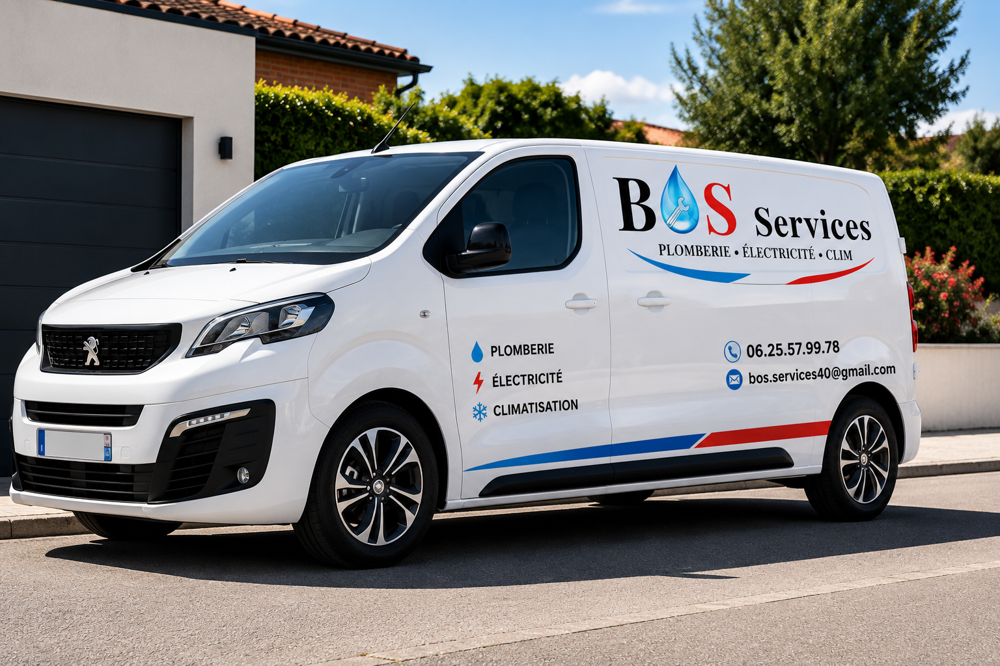
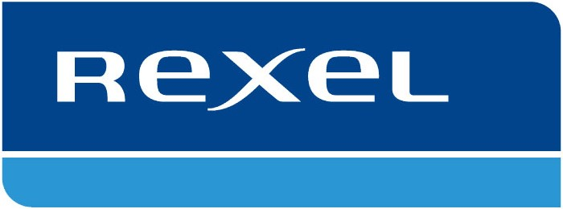
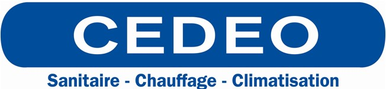

Fort de plus de 10 années d'expérience dans les domaines de la plomberie, de l'électricité et de la climatisation, Jean-Baptiste accompagne particuliers et professionnels dans tous leurs projets.
BOS Services est né d'une volonté simple : proposer un service de proximité, réactif et de qualité. Chaque intervention est réalisée avec soin, qu'il s'agisse d'un simple dépannage, d'une rénovation complète ou d'une installation neuve. L'objectif est toujours le même : fournir un travail durable, propre et conforme aux attentes du client.
Un atelier mobile permettant d'intervenir rapidement sur tous types de chantiers.

Le véhicule BOS Services est équipé du matériel nécessaire pour réaliser la majorité des interventions dès la première visite : outillage électroportatif, matériel de plomberie, équipement électrique, consommables et pièces courantes.
BOS Services s'appuie sur les plus grandes enseignes du secteur.

